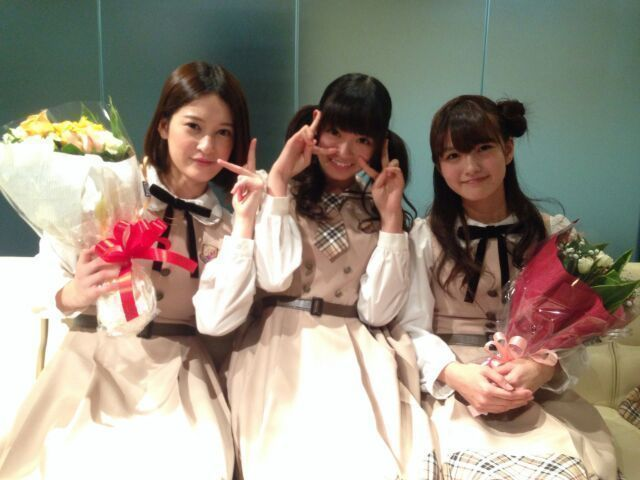
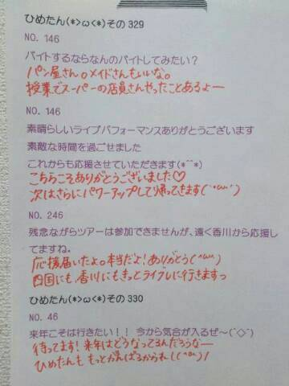

| 2013/11 18 Mon | ひめたん(*>ω<*)そ の370 |
ぼろーん！ひめたんです！
今日の記事もとっ散らかっちゃった！

昨日はサイン会＆お茶会でした♪♪
来てくださった方
ありがとうございました(*^O^*)
どっちもはじめてだったから
どんな感じになるんかなーって思ったけど
とっても楽しかったなー
これからもこんなイベント
あったらいいのにな＊
今回ははずれちゃったーっていう方も
次は当選しますように......
いきなり誰かちゃんに抱きつかれたあああ
と思ったら
純奈たん (伊藤純奈ちゃん)と
れなち (山崎怜奈ちゃん)でした(〃ω〃)
ひめたんさん見ると
抱きつきたくなるんですーだって！
なんてかわいーんだ(〃ω〃)らぶ
そういやこの前
みりりん (渡辺みり愛ちゃん)が
おみやげですって言って
かわいらしいストラップをくれたのー(〃ω〃)
もうどうしよう。ほんとにかわいい。
今度おねーちゃんも どっか行ったら
なんかおみやげ持って帰るからね♪
ありがとう大好きだよいもーとちゃーん！
そして
ゆっきーな＆せっちゃんは
昨日が最後で卒業。
卒業って言葉はなんか重みがあって
ちょっと暗い気持ちになっちゃうけど
これからもずっとずっと
なかよしだよー∩^^∩
乃木坂ちゃんの現場に遊びに来てね☆

お疲れ様でした。ありがとう！
さらに昨日はガールポップさんに
取材していただきました！
発売はまたお伝えしますっ☆
昨日の乃木どこは
みなさん観ていただけましたかー？
7thのキャンペーンで滝行しました
秋元・衛藤・川後・中元のチーム「ざ」は
なんと岩手の滝へ......
来週も観てね☆
「の」「か」みんな頑張ってたねー
なんだか感動しちゃいました(´；ω；｀)
これが滝のチカラか！恐るべし滝！
バレッタ スタジオ初披露◎
ダンスバージョンだとあんな感じですっ
今までとまた違った
女性らしいおしとやかなダンスなので
ひめたんはぴょこぴょこしないよう必死......
ライブのときもひめたんのこと
探してくれると嬉しいな///
乃木ののにて
7thカップリング曲「そんなバカな......」
解禁されました！
そんなバカな......は
とってもキャッチーなメロディーラインが
かわいらしくてお気に入りの曲(＊・ω・＊)
MVもねとってもとってもかわいいです！

 西の方の人って
西の方の人って
やっぱりマクドナルドのこと
マクドっていうの？？？
マクドは関西限定かなー
広島人はマックって言いますよー♪
ひめたんは二期生のみんなから
何て呼ばれてるの？
みおちゃんはひめちゃんって呼んでくれるよ！
みりりんはたまに(ノリで？)
おねーちゃんって呼んでくれる///
ひめたんさん、中元さんが多いかなー♪
中元さんなんてそんな、いいのに、ねえー？
学校給食で嫌いな物出るんやけど
先生に無理やり食べさせられる><
ひめたんやったらどーしますか？？
小学生の頃はそうだったなあー(´・ω・｀)
朝一に献立チェックしてから
ピーマンとかだったらもう
午前中ずーっとブルーだった。懐かしやー
それでもお残しは許してくれないので
がんばって食べたよー
ひめたんの推しタオル３つ持ってるけど、
もったいなくて開封できずにあるのが
２つあります！ひめきゅんなら全部巻いて
握手会行くべきでしょうか？
２つ保存用ってのはアリです(｀・∀・´)
ありがとー♪♪
いくちゃんのキープしてる差し入れを
こっそり食べたらどうなっちゃう？
怒るような子じゃないよ＊
ひめたん食べるー？って
カバンから出してくれたこともあります
チョコクランチだったんだけど、チョコが溶けて
クランチがパッケージの底に沈殿しててね......はは
 広島の変わった鍋、
広島の変わった鍋、
または具材ってありますか？
あんま思いつかないなー
カキの土手鍋はわりと
どっこの家庭もするんじゃないかな
そして美味しい(*^O^*)
ひとりでお仕事とかって緊張しないの？
ひとりの現場は
まだあまり経験したことないけど
そうですねー緊張するね！
マネージャーさんにいつも以上にベッタリする///
僕好きな人できたんやけど
告白した方がいいかな笑笑？答えてください！
しーなーよーしなよしなよ絶対しなよー(〃ω〃)
おにゃーのこはきっと待ってるよ。
最近、仕事のせいで肩こりひどいんだけど
これは、ひめたんビームで治りますか？
ひめたんびーむよりも
川後Pの肩もみの方が即効性があるかもしれません
みおちゃんの指圧もいいかも。

おに魂「乃木坂マスター」のコーナーで
ゆったん (斉藤優里ちゃん)が
ひめたんのブログ読んでくれたー(*^ω^*)
お手洗い付き添うの大概にしなさいと
みんなから言われるのは事実ですがしかしっ
これからも一緒に行ってください
メンバーのみなさん(笑)
そうですいつもそーやっていじられるんです
それも愛だよね。うん？
おたよりどれもおもしろかったー♪♪
(＊´・ω・＊)
コメント(301)
2013/11/18 23:42